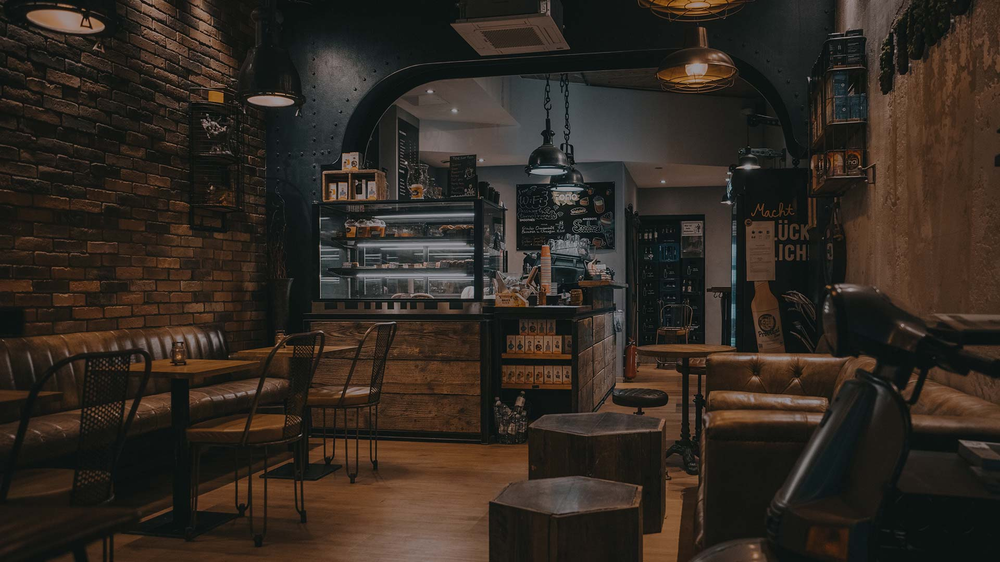
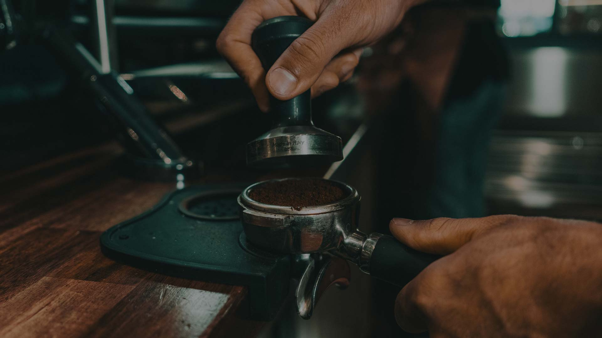
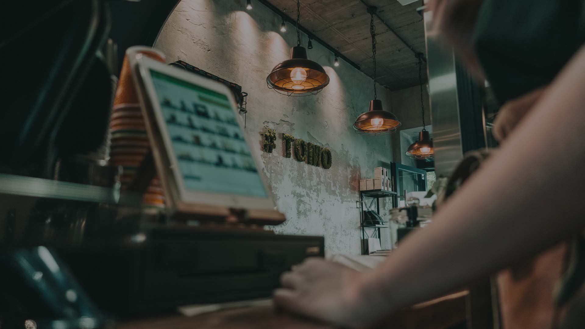
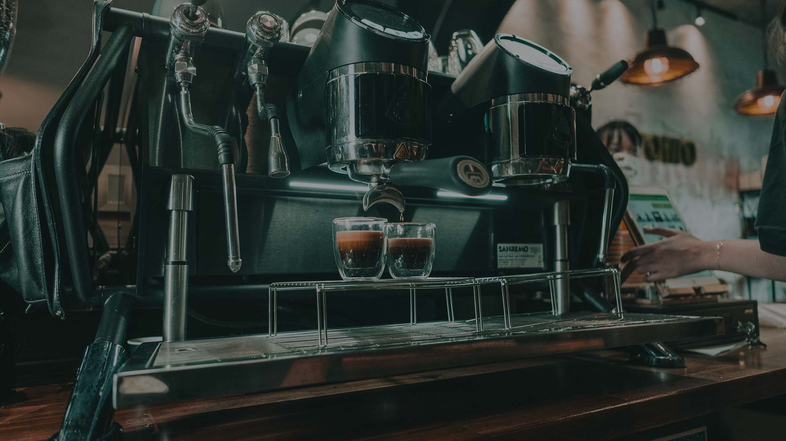

COFFEE CONNECTS!
Wir haben uns in einem Café kennengelernt und daraus ist eine jahrelange Freundschaft entstanden.
„Tomo“ – das kleine japanische Wörtchen bedeutet „Freund“. Vielleicht könnt auch ihr bei uns Freunde finden oder Freundschaften pflegen.
Was wir euch in jedem Fall versprechen sind leckerer Kaffee, eine gemütliche Stimmung und herzlichen Service. Euer Wohlbefinden steht bei uns an oberster Stelle!
Lasst euch überzeugen und besucht uns im japanischen Viertel Düsseldorfs.
Jamal & Loutfi
Genieße neben unseren köstlichen Kaffeespezialitäten auch den original japanischen Matcha-Latte, wahlweise mit Soja-, Hafer- oder Kokosnussmilch.
Wir bieten auch eine Vielfalt an leckeren Snacks für wirklich jeden Geschmack – herzhaft oder süß, von vegan bis glutenfrei.
Uns war es wichtig, euch nicht nur im Kaffee Geschmack zu beweisen. Auch unsere selbst konzipierte Einrichtung soll eure Sinne ansprechen.
Spürt ihr die zeitlose Gemütlichkeit schon?
Euer Tomo-Team




Öffnungszeiten
MO – FR
07:00 – 20:00
SA, SO & Feiertags
09:00 – 20:00
Adresse
Klosterstraße 67
40211 Düsseldorf
Schnellkontakt: +491778228000